Introduction

Map Link (full size): googledrive (9216x6144)
This map is done for my future Naruto mod in Crusader kings 3 game. There are more than 55+ countries in anime/novel/games. The map timeline is Naruto Part1 Episode1. So you can see things like "Blood Mist" and "Land of This". Map is nearly 95% canon, because every isle and every nation and even continent itself from anime sources. Which i will prove in screenshots.
I also recommend to read these two works before reading mine:
reddit (by DetectiveEvyDevy)
archiveofourown (by EmeraldLupin)
I made the research from scratch anyway, but those guys gave me some great ideas. When my research fully about geography, they go deeper into worldbuilding
I will try to write everything as short as possible. Map is done quite quickly, but before that i spent 6months rewatching entire Naruto/Boruto series (including novels and game fillers). I even made an excel file with all characters from every story for the mod.
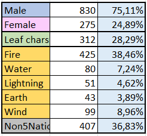
But ok, we are here for the map, lets forget about this one. Almost every nation had a hint about it's locations, except three ones. Land of Keys, Land of Bamboo and Land of Noodles. Or i missed it.
1) Continents
Where did i even get the general shape of continents from? From The Last: Naruto the Movie
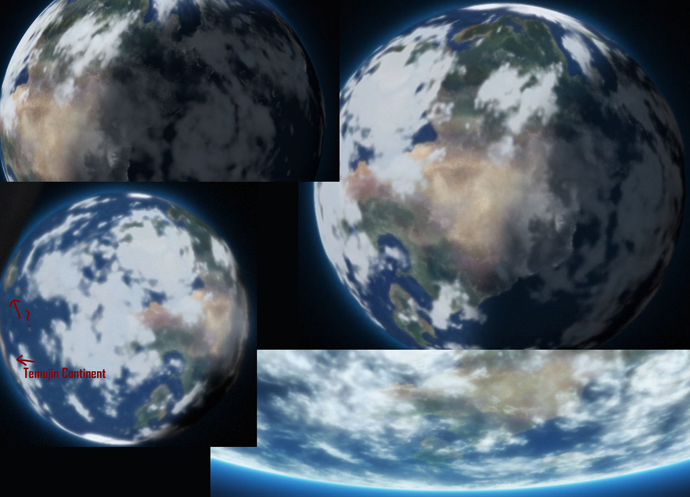
NaruHina fans always scream this film is canon, so lets agree with them once, so this map is canon too.
2) Naruto Episodes with Maps
Season 1: 6, 23, 37, 102, 137, 162, 169, 190, 217
Season 2: 37, 72, 126, 172, 223, 232, 241, 244, 256, 262, 309, 369, 394
Boruto: 27, 120, 239, 243
Movie: 3, 4, 6
3) Five Great Nations
Lets start with the obvious ones. Btw if you decided to read all of this, then i recommend to open googledrive map at the same time to understand what i am talking about
Land of Fire
This is the easiest one, there is nothing to say
Land of Wind
We have only one map that expands its borders
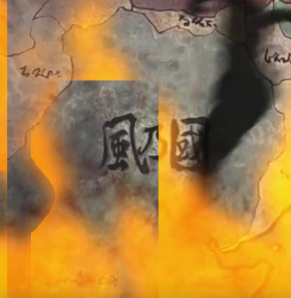
And i took southern desert/mountain borders i can see in map from "The last movie" as natural borders, because as we know it is desert-locked country. If Wind had lands in south (where we indeed can see forests), i dont think the first Kazekage would build the village in the desert tbh
Land of Earth
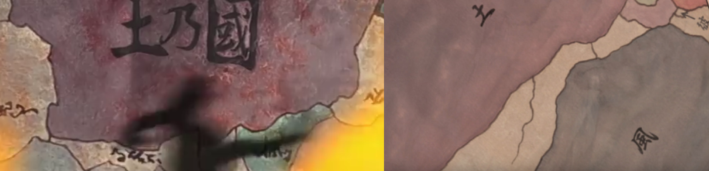
The same map expands borders for the Land of Earth. We have no choice
Land of Lightning
We have two version of how the Lightning goes to the North. I took the second one.
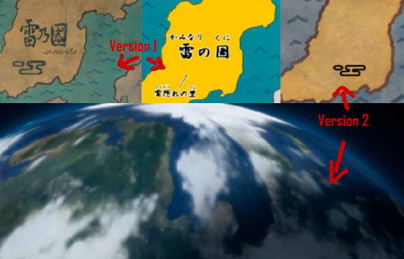
And it goes straight to the Land of Snow. As we know from Boruto manga you can get to Snow on train from Konoha. This is why i connected Lightning and Snow in the map.
Land of Water
This is the tough one. I used the canon map of the Water from Boruto "water civil war" arc.
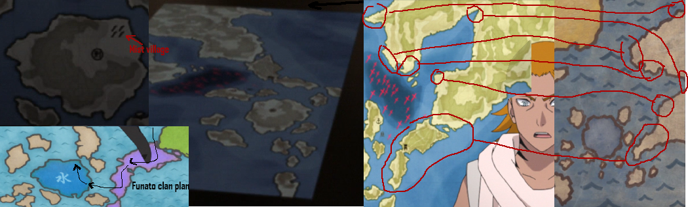
They kinda modified it in Boruto, for Eastern Continent i decided to keep Naruto version, but modified that peninsula. The Water itself and Mist's location fully taken from Boruto.
That purple region is where Kagura Karatachi lived, and it was attacked by Funato, so this peninsula does belong to Land of Water. Do you see that battle region on water? And Funato clan attack plan? It would make sense only if Funato clan lived in North-Western part of Eastern Continent, so i gave it to them.
Also during Naruto Shippuden arc (223-242) we discovered some Water colonies in waters between Lightning and Fire, but i will get to that later.
4) Littlings between five great nations
Aka all minor countries.
There is nothing to say about Rivers, Rain, Waterfalls, Sound and Frost. Their locations are pretty easy and canon. I would question only the sea where Jiraya decided to rest after his death, but it is what it is.
Land of Grass
One notion for Grass, Hozuki castle(Blood prison) in boruto was said to be administrated by Grass, not located there. So they fixed it. And i placed the prison in the sea between Iron and Earth. We can assume there is some natural border between Earth and Waterfalls, a river. And this is how Grass always gets to prison.
Land of Iron/Land of Medicines
In chapter 8 EmeraldLupin gave a full explanation of why Land of Iron should be where i eventually placed it.
Nothing to add. About the Land of Medicines, it has to be next to Land of Iron, we literally have no choice. So this is the only time i have to break the canon map. Medicines has to eat parts of Sound and Iron lands.
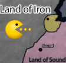
Land of This/Land of That
They gave us the exact location of Land of That after it conquered Land of This.
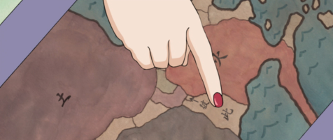
Land of Hot Water/Land of Stairs
Hot Water is tricky one. Even in screenshot above they divided it. Half of maps show it as a big one, half of the maps(and very different ones) divide it. I am a simple human. "I see it = I take it". Without that land i had no place for Land of Stairs, which must be very close to Fire, and whose gas resources make it's income x3 time bigger than Fire nation's.
Land of Bird/Land of Stone
DetectiveEvyDevy explained that confusion around Bird and Stone. Besides those two countries we have Hidden stone village. And Land of Bird doesnt have any ninja village for sure. We basically had zero ninjas there despite some kind of civil war. So as a simple human "i see Land of Stone, i see Stone Village = i place Stone in Stone". I dont see anything that can prevent me. It is either Land of Bird the west one or Land of Stone. I checked in photoshop, Manga's Stone village location kinda covers both lands, i decided to follow anime's location of Land of Bird, so Land of Stone with Stone village goes to the west.
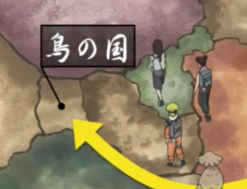
Land of Mountain Streams
From season 1, ep 195-196. We dont have much information, but we saw how Guy and Yagura were running through mountain ranges. 99% likely they were running through Lands of Bird and Stone. So i put it literally after the Land of Stone in the west. And i want it fully cover mountain rivers to deserve it's name. It has to cover river sources in mountains from both Land of Wind and Land of Earth to the very end of river delta in the western sea. And i achieved that.
Tsukigakure(Village hidden under the Moon) Well.. I put it in the Land of Mountain Streams. I filtered out all 50+ nations that could have Moon Village. There were only two candidates, Land of Valleys and Mountain Streams. But i had to drop Valleys because in Valley/Kara arc we can see some specific ninja uniform, even though they dont wear headbands. And Tsukigakure has earth/rock location around village. But Tsukigakure also has "Fields of the New Moon Flower" full of grass and flowers. This is why the land between earth/wind suits it. And yes, Land of the Moon doesnt have shinobis.
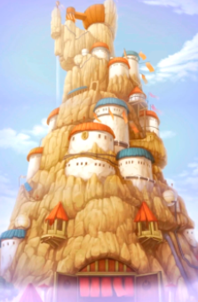
Land of Forests/Land of Woods
Land of Forests is a country when Naruto was delivering Shinobazu guy to Forest's capital. And the only way to the capital is by a river. One of the last countries i was placing, and the only suited place was east of Land of Fire, it must have limited border with other countries, mostly surrounded by water, to get such an isolated capital. And considering it's climate and forests, must be pretty similar to Fire.
Land of Woods are people who tried to attack our brother Danzo. It shouldn't be too far away from Fire, Leaf village was trying to form an alliance with them. And you obviously want to put Woods next to Forests. So i used this map
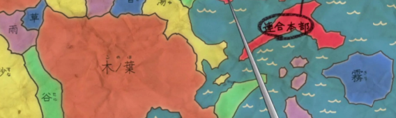
Actually this map is a very drunk version among all maps, but i had to use it. It says those four isles west of Land of Water are independent. So... "I see it = I take it". And tbh these islands were never been declared as part of Land of Water anywhere.
5) Middle Sea and South Sea regions
First i would recommend you to read chapter 2 by Lupin.
In episode 2-223 we got these two maps
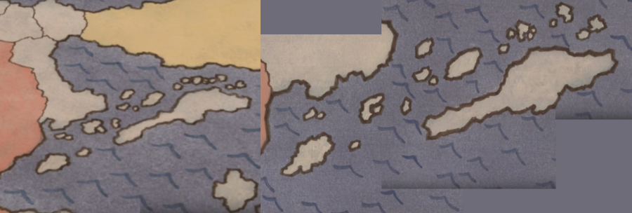
Isles between Fire/Lightning
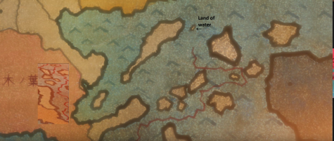
In episode 241 we got this map. And we have very controversial situation. In ep223 Tsunade clearly shows us that Naruto was going to sail through all those little isles above, but in screenshot of ep241, they say Naruto first got to the very south of Land of Fire, then he headed to the Land of Water with some very strange route. I say no to 241 map.
And from another map we know there is a big port, where Naruto sailed from according to ep223.
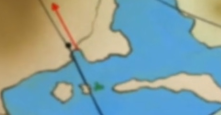
So you can see where i placed all those isles from this arc.
Land of Waves/Land of Whirlpools
I side with both DetectiveEvyDevy and EmeraldLupin, that Land of Waves is ex-Whirlpools. Had the same thoughts. What can i add? In Land of Waves arc Great Naruto Bridge opens a way to Uzumaki homeland again. Too beautiful. In boruto they said Land of Waves was expanding to neighbor isles, thus increasing tensions with Land of Water. And there you have all these isles. Great? Great-oh!
Land of the Sea/Land of the Moon/Land of the Sky/Land of Tea
Land of Tea and Land of the Sea. There is nothing special, their locations are kinda easy.
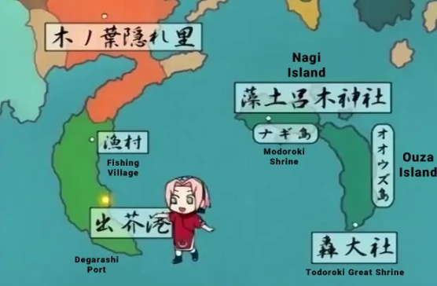
But i wanna dig deeper into the Anko's map.
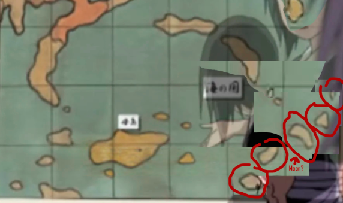
Moon. And i am swear i am not crazy. Probably i see the only thing among all Naruto maps that can remind the shape of the Moon. And i will happily take it. So here i put Land of the Moon. And movie said it is somewhere in the south. Btw there are like 5 isles in a row. Can we call it "Five Great Islands"? To oppose "Five Great Shinobi Nations"? x.x
Sky. We know that those remnants came from south. And they had to live somewhere and eat... and sleep.. Without being noticed by those evil Leaf ninjas.
And probably i see something that doesn't exist again, but come on
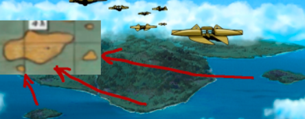
So i placed them behind Land of the Sea... Far enough from Fire, and south.
Land of Yamato (Nadeshiko village's country)
It is an unnamed country in lore. We know that Nadeshiko village not far away from Land of Water.
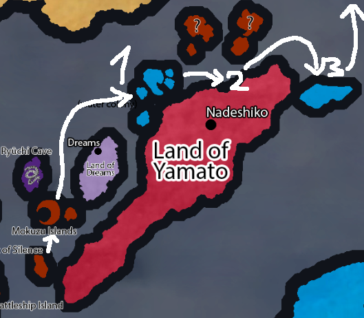
Let me elaborate this. After the Mokuzu islands Naruto meet his own imposter in episode 233, and they clearly said they are in a random isle of Water. Then in episode 235 they met two kunoichi from Nadeshiko village. Most likely it was part of Nadeshiko's country, but not shinobi village itself, so there were not many of those kunoichis. And then in episode 242 they get to another isle of Water, where they resupply, and they say its not far away from Turtle island. So this why i placed this country here. Why Yamato? Because Yamato Nadeshiko reference. And because Yamato is an ancient name of Japan. Does this island's shape remind you of Japan? For me yes.
Land of Dreams
Yumegakure(Village Hidden Among Dreams) from a game. I give quotes from the game.
In a short distance from the Land of Fire
Located in a tiny country
Other places were taken by Stairs/Woods/Forests etc. So i chose the biggest island here, which is tiny for a country, but still can be called a country with a hidden village.
6) Beyond the Land of Earth
Land of Swamps/Demons/Bears
First two nations from the 4th movie
In "The Last" movie we can see
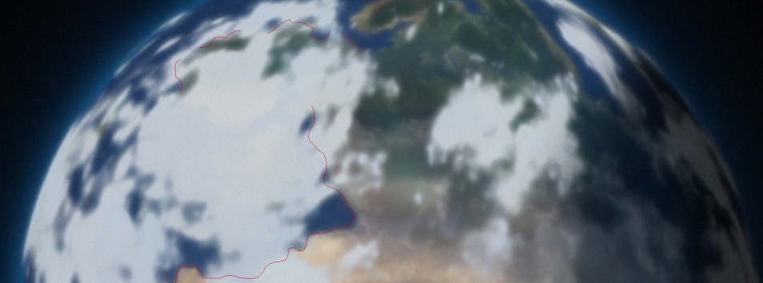
Fracking clouds dont allow us to see, but it hides some thin and long land. There is no other place that can suit. And on movie's map do you see that brown country on the right side? Let me show you another map again
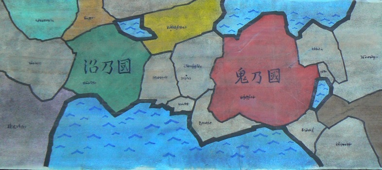
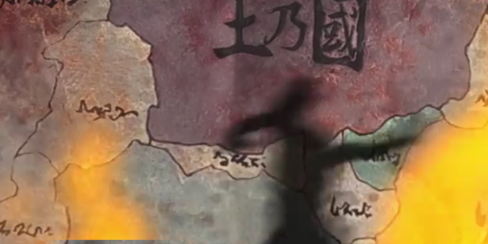
Do you see the country to the left of Earth. It is very similar to that brown from first map. But maybe again i see some connection that doesnt exist. Anyway i decided to put here Land of Bears. There are no reasons why not. Naruto said it was very far
Land of Valleys/Haze/Silence
What do we know? These 3 countries are close to each other. When Boruto and co were in Land of Valleys, they said the closest black market in Land of Silence. Then in Land of Silence we met shinobis from Land of Haze. It was said it takes 1 day to get from Silence to Haze if you use the long(!) route. So i am 99% sure Haze and Silence are neighbors, Valleys somewhere close.
Valleys. It has both rocky locations and valleys. Close to mountain ranges of Land of Earth seems ok.
Silence. We know the silence out of 5 great shinobi nation's influence. And it is said to be located on the western edge of the continent. Maybe i should have placed it even further west. But there is a thing that from Konoha to Land of Silence it takes 2 days X_X
And Haze comes as a neighbor.
Land of Vegetables/Land of Flowers
First i would recommend to read chapter 7 about Flowers and chapter 8 about Vegetables. So you can understand where i come from. Second i would like to point out that there are definitely no shinobi villages in Vegetables. Princess Haruna has shinobi bodyguards with unique flower techniques, yes. But her entire country was overtaken by 3(!!!) enemy ninjas. Either their shinobis at academy level strength or they dont have them. So her bodyguards are hired mercenaries from Land of Flowers.
As said in chapters above, we have flower jutsus, similar climate to Land of Flowers. Most likely these countries are neighbors. We can put them anywhere together. But in the novels it is said that Land of Flowers next to Land of Earth, and it's independence guaranteed by Land of Lightning, because Earth wants to attack Flowers.
We cant put them to west/south of Earth, too far away from Lightning. In east we have Waterfalls, no place. So the only direction is north. Why they have such an amazing lands despite being in the north. Well... Lets say its a magic! Maybe mountains or northern sea protect from cold winds, no idea.
There is another thing. Vegetables was taken by Janin brothers group. I dont remember in which exact episode, but it was said Janin brothers came from the other side of the sea. So our countries must be on the coast? Probably. One of brothers has ice release, another one has water release. So if i put Vegetables and Flowers to the north of Earth, Land of Snow exactly on the opposide side of the sea! GGwp
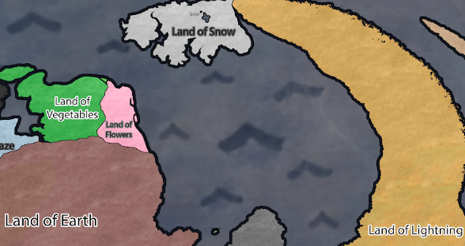
Land of Snow
Speaking about Snow! As i said in Lightning explanation, it is connected for trains. Then in movie they got to Snow by a ship. They met princess Koyuki in town, where not even a single shinobi could be seen. And actors had samurai armors. And indeed, from Leaf the shortest way to the Land of Snow across the sea is from the Land of Iron.
Why it has such a shape? Because we have only one official map for it!
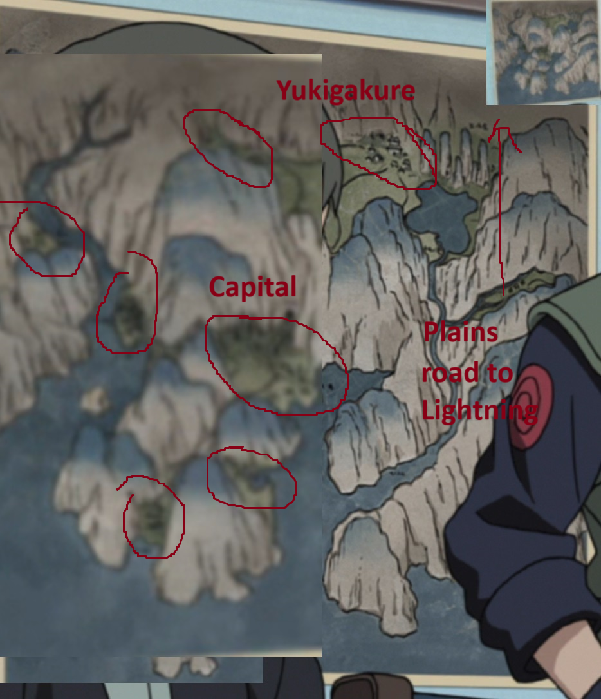
WELL, i just copied it. We never saw yukigakure, but it's direct translation is village among snow. Let it be deeper. So the biggest one on the coast is the capital of Land of Snow. Next to the capital you can see a cave and the straight road to yukigakure. Probably in 20 years i was the first person able to notice this cave lmao.
7) Eastern Continent
What countries did i put here? Fangs, Claws, Bamboo, Shangri-la, Keys, Calm Sea
Fangs and Claws must be not too far away from Fire, because Naruto and Jiraya got there eventually just to return pervy's book. and EC feels ok.
Shangri-la. It took 5 days for Konan herself(!) to get here from Rain village. I cant put it in the western continent. So Land of Silence gathers all bad guys in the west, Shangri-la in the east. Thats it. Also when Konan left the Rain village heading to Shangri-la she said:
the light of the sun was dazzling
You usually hit the road in the morning, so she was most likely traveling east.
Fangs/Claws/Shangri-la everything gives me chinese vibes. So i decided to put Bamboo next to them. Can we assume that TenTen and Rock Lee families came from EC?
Land of Keys. As i said earlier zero information about this one. With "Key" they meant key to other people's minds. But i gave the second meaning. This land is a key/gates to the shinobi world. Defending mountain ranges in the eastern continent. Didnt want to write Terra Incognita twice, so made something different here.
Land of Calm Seas. "Calm seas" only happen at the equator. Thats it i think.
8) Narutafrica (southern part of the shinobi continent)
Redaku, Honey, Neck, Bean Jam, Noodles, Mountains, Mount Koryu, Sand
Will end it later. These are the last countries x.x